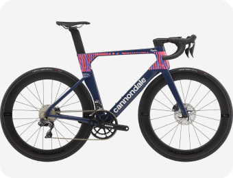
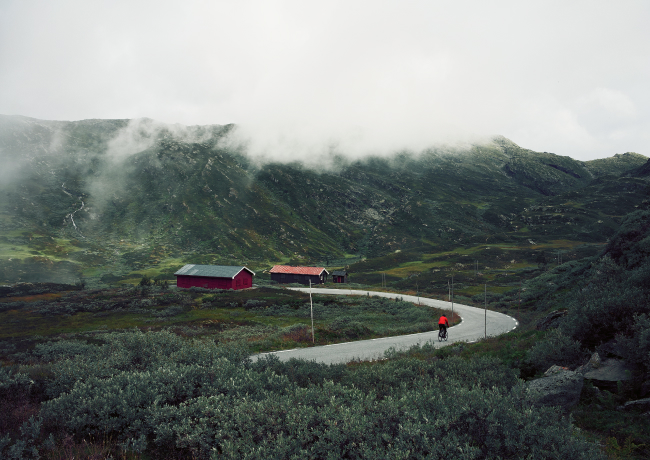

Триатлонные старты, горные серпантины или грейвел заезды по живописным
маршрутам – нужно только определиться с выбором велосипеда и отправиться в путь.
Cannondale Systemsix


«Катайся много или мало, долго или коротко, как хочешь - но катайся»
Эдди Меркс
Велогонщик
Тренировки
Чтобы найти маршрут для тренировки можно воспользоваться сервисом Komoot, а
записать эти тренировки поможет приложение Strava, а также это приложение позволит построить
тренировочный план.